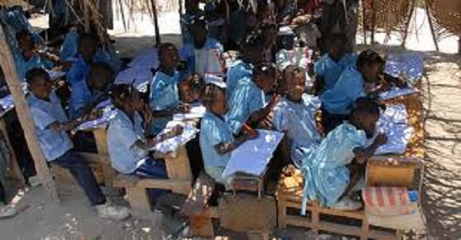

This is a placeholder of 3D Flash Slider. Feel free to put in any alternative content here.
Like in many countries, in Haiti, there are some schools that are so expensive, belong to the wealthiest people and to the regressively class.
The founders of Haiti’s first constitution in 1805 states “… Free Education for all” and the
Constitution of 1987 in Article 32 “…guarantees the right to Education”; however, Haiti’s literacy
rate at 52.9 %, remains one of the lowest in the world.
The Ministry of Education, due to financial
limitations, has not been able to fulfill this obligation and the regulation of schools has been
disorganized.
This literally means that anyone can open a school at any level of education, recruit
students and hire teachers, without having to meet minimum standards. Income inequalities have also
led to sharp disparities among the regions and social classes of the nation.
As a result, 80% of the
students attend private schools, despite the economic burden it creates for families.
The January 2010 earthquake placed an already deficient system faced with years of mismanagement, over
crowdedness, precarious physical conditions, and limited number of qualified teachers into an indeterminate
state.
It is estimated that nearly 1.3 million children under the age of 18 were affected directly or
indirectly by this catastrophe and had their schooling disrupted or halted.
In response, the Haitian government, along with international support, diligently created and attempted to
implement a program that prioritized the prompt “back to school” for the affected children. A coordinated
effort is emerging to improve teacher training, student enrollment, attendance and completion.
Several pilot projects such as Programme de Scolarisation Universelle Gratuite et Obligatoire (PSUGO), or
the Haitian Educator Leadership Program (HELP), are focusing on the improvement of education in Haiti and
they seem promising.
It is hoped that a sustainable education system will emerge from the rubble of the earthquake. This system
should facilitate a quality education for all, which complements the wonderfully kind nature of the Haitian
people, and serves as an avenue to the food, housing, employment, health, and transportation needs of this
devastated country.
This system can only come about through the lasting commitment to accessibility from
within Haiti and the world outside. The only way out of this situation is accessibility.

Here, at the Rubicon International Foundation, we are committed to creating educational opportunities for children whose access has been severely limited or affected by crisis.